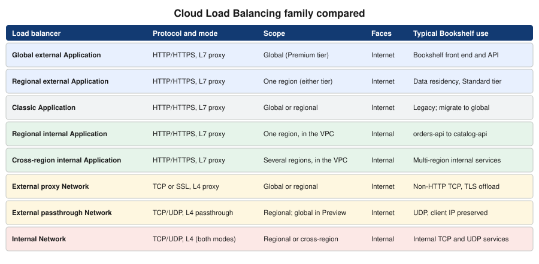

Load Balancing and Cloud Armor
|
This content was generated with the assistance of AI and should be verified against the official documentation before being relied on in production. |
Commands and behaviour on this page are current for the gcloud CLI 586.x line, the Cloud Load Balancing, Cloud Armor and
Cloud NAT documentation and release notes published through 2026-09-29, the Google Cloud Client Libraries for Java
(libraries-bom) and Terraform hashicorp/google v8 (checked 2026-10-01); re-verify against gcloud version and the
linked reference pages before relying on them in a pipeline. Examples use the placeholder project ID my-project-id, the
placeholder domain example.com and the region us-central1; all are stand-ins for your own values.
Cloud Load Balancing is not one product but a family of managed, software-defined load balancers that share one control
plane and one set of building blocks (forwarding rule, target proxy, URL map, backend service, health check). Choosing the
right member is the first decision; the second is what to put in front of it. In the Bookshelf scenario (see
Google Cloud) one global external Application Load Balancer presents the static front end and the
catalog-api Cloud Run service under a single HTTPS hostname, Cloud Armor (policy bookshelf-policy) filters the traffic
before it reaches Cloud Run, and a regional internal Application Load Balancer lets orders-api call catalog-api without
leaving the VPC. This page covers the chooser, building the load balancer in the console and with the CLI, routing,
custom headers, Cloud Armor, Cloud NAT for outbound traffic, custom domains for Cloud Run, pricing and troubleshooting.
The caching side of the same load balancer (Cloud CDN, signed URLs, invalidation) is on Cloud CDN and Media CDN; the DNS records and the certificates it presents are on Cloud DNS and Certificate Manager; the VPC, subnets and the Cloud NAT gateway in depth are on VPC Networking on Google Cloud. For the counterparts on other clouds see Load Balancers and Gateways and Front Door and CDN.
Concepts
- Forwarding rule
-
The frontend of a load balancer: an IP address, a protocol and a port range, pointing at a target proxy (Application and proxy Network load balancers) or directly at a backend service (passthrough Network load balancers).
- Target proxy
-
Terminates the client connection (HTTP, HTTPS, TCP or SSL), presents the certificate and hands the request to a URL map or backend service. A passthrough load balancer has no proxy.
- URL map
-
The routing table of an Application Load Balancer. Host rules select a path matcher; path matchers and route rules select a backend and may redirect, rewrite, add headers or split traffic.
- Backend service
-
A group of backends of one kind plus the policy that governs them: balancing mode, session affinity, timeouts, health check, Cloud CDN, Cloud Armor and custom headers.
- Backend bucket
-
A Cloud Storage bucket used as a backend, typically with Cloud CDN. It has no health check.
- Network endpoint group (NEG)
-
A set of endpoints that a backend service can use instead of instance groups. A serverless NEG points at one Cloud Run service, Cloud Run function or App Engine app, or, with a URL mask, at many; a zonal NEG points at VM or Pod IP addresses; an internet NEG points at an external hostname; a hybrid NEG points at on-premises endpoints.
- Health check
-
A probe that decides whether an instance or endpoint receives traffic. Serverless NEGs and backend buckets do not use one.
- Cloud Armor security policy
-
An ordered list of rules (allow, deny, throttle, rate-based ban, redirect) evaluated at Google’s edge for a backend service, backend bucket or load balancer, with optional preconfigured WAF rules and Adaptive Protection.
- Premium and Standard Network Service Tier
-
Premium carries traffic over Google’s backbone to the nearest edge location and is required by the global external Application Load Balancer; Standard uses the public internet for part of the path and is available for regional load balancers.
Choosing a load balancer
Three questions pick the product. First, what protocol: HTTP and HTTPS traffic belongs on an Application Load Balancer, which understands URLs, headers and cookies (layer 7); anything else belongs on a Network Load Balancer (layer 4), which is either a proxy that terminates TCP or SSL connections or a passthrough that forwards packets unchanged, preserves the client IP address and also handles UDP and ESP. Second, who are the clients: the internet (external) or only your VPC and connected networks (internal). Third, where must it run: global (one anycast address serving every region), cross-region (an internal address that fails over across regions) or regional (pinned to one region, for data residency or the Standard network tier).

Derived from Choose a load balancer.
The products behind the leaves are:
- Global external Application Load Balancer (
EXTERNAL_MANAGED, global) -
The default choice for internet-facing web applications and APIs: one anycast IP address, Premium tier, TLS terminated at the edge, advanced traffic management, Cloud CDN, Cloud Armor, IAP, backends in many regions and backend types (instance groups, zonal and serverless NEGs, backend buckets, hybrid and internet NEGs).
- Regional external Application Load Balancer
-
The same model confined to one region. Choose it for data-residency rules or to use the Standard network tier; it needs a proxy-only subnet in the region and supports fewer features (for example no Cloud CDN).
- Classic Application Load Balancer (
EXTERNAL) -
The original external HTTP(S) load balancer. It still works and is not deprecated, but Google recommends the global external Application Load Balancer for new deployments and documents a phased migration (the load balancing scheme moves from
EXTERNALtoEXTERNAL_MANAGED, with traffic shifted gradually and a rollback window); migrate when you need the advanced routing and security features it lacks. - Regional internal Application Load Balancer (
INTERNAL_MANAGED) and cross-region internal Application Load Balancer -
Layer 7 balancing on a private address, for service-to-service traffic, microservices and internal APIs. The cross-region variant exposes one internal address backed by services in several regions.
- Proxy Network Load Balancers
-
Layer 4 TCP (and SSL, for the external global and classic variants) proxies that terminate the client connection. Use them for non-HTTP protocols that need TLS offload or global reach, such as a custom TCP protocol or a database proxy.
- Passthrough Network Load Balancers
-
Regional layer 4 load balancers that forward packets without terminating them, preserve the client source IP, support TCP, UDP, ICMP, ESP and GRE, and use direct server return. A global external passthrough Network Load Balancer was announced as a Preview feature at the time of writing; check the launch stage before using it for production traffic.
The Gateway API on GKE does not add a product: GKE Gateway controllers create the Application Load Balancers above from Kubernetes resources (see The Gateway API on GKE).
Prerequisites for Bookshelf
-
The bucket
bookshelf-web-$PROJECT_IDand the Cloud Run servicecatalog-api, from Cloud Storage Security and Static Sites and Cloud Run. -
A public DNS zone for
example.comwhere you can create anArecord; see Cloud DNS and Certificate Manager. -
Permissions:
roles/compute.loadBalancerAdminto build the load balancer,roles/compute.securityAdminfor Cloud Armor policies and SSL policies,roles/certificatemanager.editorfor certificates, androles/compute.networkAdminfor Cloud NAT and proxy-only subnets. A project owner has them implicitly.
export PROJECT_ID="$(gcloud config get-value project)"
export REGION=us-central1
export BUCKET="bookshelf-web-${PROJECT_ID}"
export DOMAIN=www.example.com
gcloud services enable \
compute.googleapis.com \
certificatemanager.googleapis.com \
run.googleapis.com \
storage.googleapis.comDerived from gcloud services enable.
Global load balancer resources take --global; serverless NEGs, internal load balancers and Cloud NAT are regional. The
console groups them all under Network services > Load balancing.
Building the global external Application Load Balancer
In the Google Cloud console
-
Select the project in the project picker and confirm the Compute Engine and Certificate Manager APIs are enabled under APIs & Services > Enabled APIs & services. Cloud Shell has the gcloud CLI preinstalled if you prefer a terminal.
-
Open Network services > Load balancing > Create load balancer.
-
Choose Application Load Balancer (HTTP/HTTPS), Public facing (external), Global workloads and Global external Application Load Balancer, then Configure.
-
Name it
bookshelf-lb. Under Frontend configuration add an HTTPS frontend: Premium tier, a new IPv4 addressbookshelf-ipand a Certificate Manager certificate forwww.example.com. -
Under Backend configuration create a backend bucket for
bookshelf-web-$PROJECT_ID, and a backend service of type Serverless network endpoint group that points at the Cloud Run servicecatalog-api. -
Under Host and path rules make the bucket the default and send
/api/*to the backend service. -
Under Cloud Armor on the backend service, select the security policy
bookshelf-policyonce it exists (see Cloud Armor). -
Select Create, copy the IP address and create an
Arecord forwww.example.comat your DNS provider.
With the gcloud CLI
The load balancer is built bottom-up: backends, URL map, certificate, proxy, forwarding rule.
Serverless NEG and backend service for Cloud Run
gcloud compute addresses create bookshelf-ip --ip-version=IPV4 --global
gcloud compute network-endpoint-groups create catalog-neg \
--region="$REGION" \
--network-endpoint-type=serverless \
--cloud-run-service=catalog-api
gcloud compute backend-services create catalog-backend \
--load-balancing-scheme=EXTERNAL_MANAGED \
--global
gcloud compute backend-services add-backend catalog-backend \
--global \
--network-endpoint-group=catalog-neg \
--network-endpoint-group-region="$REGION"
gcloud compute backend-buckets create bookshelf-web-bb \
--gcs-bucket-name="$BUCKET"Derived from gcloud compute network-endpoint-groups create, gcloud compute backend-services create and gcloud compute backend-buckets create.
A serverless NEG must be in the same region as the Cloud Run service, holds exactly one service (or a URL mask for
several, such as --cloud-run-url-mask=<service>.example.com), needs no health check and does not use a balancing mode.
For long requests raise the Cloud Run request timeout as well as the backend service timeout. A global load balancer can combine serverless NEGs from
several regions, so that a request is sent to the closest region that has the service deployed.
Backend service with a managed instance group and a health check
The web tier of the Compute Engine variant of Bookshelf (see Compute Engine) uses instance
groups, which need a health check and a firewall rule that admits the Google probe ranges 130.211.0.0/22 and
35.191.0.0/16.
gcloud compute health-checks create http bookshelf-hc \
--port=8080 --request-path=/actuator/health/readiness --global
gcloud compute firewall-rules create allow-health-checks \
--network=default --direction=INGRESS --action=allow \
--rules=tcp:8080 \
--source-ranges=130.211.0.0/22,35.191.0.0/16 \
--target-tags=bookshelf-web
gcloud compute backend-services create web-backend \
--load-balancing-scheme=EXTERNAL_MANAGED \
--protocol=HTTP --port-name=http \
--health-checks=bookshelf-hc --global
gcloud compute backend-services add-backend web-backend \
--global \
--instance-group=bookshelf-mig \
--instance-group-region="$REGION" \
--balancing-mode=UTILIZATION --max-utilization=0.8URL map, certificate, proxy and forwarding rule
gcloud compute url-maps create bookshelf-map \
--default-backend-bucket=bookshelf-web-bb
gcloud compute url-maps add-path-matcher bookshelf-map \
--path-matcher-name=bookshelf-paths \
--default-backend-bucket=bookshelf-web-bb \
--backend-service-path-rules='/api/*=catalog-backend' \
--new-hosts="$DOMAIN"
gcloud certificate-manager dns-authorizations create bookshelf-dns-auth --domain="$DOMAIN"
gcloud certificate-manager certificates create bookshelf-cert \
--domains="$DOMAIN" --dns-authorizations=bookshelf-dns-auth
gcloud certificate-manager maps create bookshelf-certs
gcloud certificate-manager maps entries create bookshelf-www \
--map=bookshelf-certs --hostname="$DOMAIN" --certificates=bookshelf-cert
gcloud compute target-https-proxies create bookshelf-https-proxy \
--url-map=bookshelf-map --certificate-map=bookshelf-certs
gcloud compute forwarding-rules create bookshelf-https \
--load-balancing-scheme=EXTERNAL_MANAGED \
--network-tier=PREMIUM \
--address=bookshelf-ip --global \
--target-https-proxy=bookshelf-https-proxy \
--ports=443Derived from gcloud compute url-maps add-path-matcher, Deploy a Google-managed certificate with DNS authorization and gcloud compute forwarding-rules create.
The DNS authorization prints a CNAME record to add at your DNS provider; the certificate moves from PROVISIONING to
ACTIVE after it is visible, which can take from minutes to an hour. Create the A record for $DOMAIN pointing at
bookshelf-ip as well. Verify with:
IP="$(gcloud compute addresses describe bookshelf-ip --global --format='value(address)')"
curl -sI --resolve "${DOMAIN}:443:${IP}" "https://${DOMAIN}/api/books" | head -n 1
gcloud certificate-manager certificates describe bookshelf-cert --format='value(managed.state)'Derived from gcloud certificate-manager certificates describe.
Terraform alternative
resource "google_compute_region_network_endpoint_group" "catalog" {
name = "catalog-neg"
region = var.region
network_endpoint_type = "SERVERLESS"
cloud_run {
service = "catalog-api"
}
}
resource "google_compute_backend_service" "catalog" {
name = "catalog-backend"
load_balancing_scheme = "EXTERNAL_MANAGED"
protocol = "HTTPS"
security_policy = google_compute_security_policy.bookshelf.id
backend {
group = google_compute_region_network_endpoint_group.catalog.id
}
}Derived from google_compute_backend_service and Serverless network endpoint groups overview; the full stack is on Infrastructure as Code.
URL maps in depth
A URL map is a YAML document that you can export, edit and import, which is the practical way to express anything beyond simple path rules: header and query-parameter matches, redirects, rewrites, traffic splits, retries, timeouts and header actions.
gcloud compute url-maps export bookshelf-map --global --destination=bookshelf-map.yaml
# edit bookshelf-map.yaml
gcloud compute url-maps import bookshelf-map --global --source=bookshelf-map.yaml --quiet
gcloud compute url-maps validate --global --source=bookshelf-map.yamlDerived from gcloud compute url-maps import and gcloud compute url-maps validate.
The following map sends beta testers to a preview backend by header, rewrites a legacy path and redirects a retired host.
name: bookshelf-map
defaultService: https://www.googleapis.com/compute/v1/projects/my-project-id/global/backendBuckets/bookshelf-web-bb
hostRules:
- hosts: ['www.example.com']
pathMatcher: bookshelf-paths
- hosts: ['books.example.com']
pathMatcher: legacy-redirect
pathMatchers:
- name: bookshelf-paths
defaultService: https://www.googleapis.com/compute/v1/projects/my-project-id/global/backendBuckets/bookshelf-web-bb
routeRules:
- priority: 1
matchRules:
- prefixMatch: /api/
headerMatches:
- headerName: x-beta
exactMatch: 'true'
service: https://www.googleapis.com/compute/v1/projects/my-project-id/global/backendServices/catalog-beta-backend
- priority: 2
matchRules:
- prefixMatch: /api/
service: https://www.googleapis.com/compute/v1/projects/my-project-id/global/backendServices/catalog-backend
- priority: 3
matchRules:
- prefixMatch: /v1/catalog/
routeAction:
urlRewrite:
pathPrefixRewrite: /api/
weightedBackendServices:
- backendService: https://www.googleapis.com/compute/v1/projects/my-project-id/global/backendServices/catalog-backend
weight: 100
- name: legacy-redirect
defaultUrlRedirect:
hostRedirect: www.example.com
httpsRedirect: true
redirectResponseCode: MOVED_PERMANENTLY_DEFAULT
stripQuery: falseDerived from Set up URL rewrite, Set up traffic management and Set up an HTTP-to-HTTPS redirect.
Route rules are evaluated in priority order, lowest number first; the first match wins, so put specific rules first. A
path matcher accepts either simple pathRules or routeRules, not both. For an HTTP-to-HTTPS redirect, attach a second
URL map that contains only defaultUrlRedirect with httpsRedirect: true to an HTTP target proxy and a forwarding rule on
port 80 that shares the IP address bookshelf-ip; the console does this when you tick Enable HTTP to HTTPS redirect.
Custom request and response headers
The load balancer can add headers to requests it forwards to a backend and to responses it returns to clients, with variables that it fills in from the connection. This is the supported way to learn the client’s approximate location or TLS properties without a geolocation library.
gcloud compute backend-services update catalog-backend --global \
--custom-request-header='X-Client-City:{client_city}' \
--custom-request-header='X-Client-Region:{client_region}' \
--custom-request-header='X-Client-Region-Subdivision:{client_region_subdivision}' \
--custom-request-header='X-Client-IP:{client_ip_address}' \
--custom-request-header='X-TLS-Version:{tls_version}'
gcloud compute backend-services update catalog-backend --global \
--custom-response-header='X-Cache-Served-By:bookshelf-edge'Derived from Create custom headers and gcloud compute backend-services update.
Useful variables are {client_region} (the country as an ISO code), {client_region_subdivision}, {client_city},
{client_city_lat_long}, {client_ip_address}, {client_port}, {client_rtt_msec}, {tls_sni_hostname},
{tls_version} and {tls_cipher_suite}. Header names are limited: some well-known and reserved names and prefixes cannot
be set, there is a documented cap on the number of custom headers per backend, and the location variables are
approximations that can be empty (the header is then sent empty). A custom header is added to the request even if
the client sent one with the same name, so check the documented behaviour before relying on a name.
The following Spring Boot controller serves region-specific content from the headers. Treat them as hints, never as an authorization input: set them unconditionally on the load balancer so that clients cannot spoof them, and fall back to a default when they are empty.
package com.example.bookshelf.catalog;
import java.util.Map;
import org.springframework.web.bind.annotation.GetMapping;
import org.springframework.web.bind.annotation.RequestHeader;
import org.springframework.web.bind.annotation.RestController;
@RestController
class StoreController {
@GetMapping("/api/store")
Map<String, String> nearestStore(
@RequestHeader(name = "X-Client-City", required = false, defaultValue = "unknown") String city,
@RequestHeader(name = "X-Client-Region", required = false, defaultValue = "ZZ") String country) {
return Map.of("city", city, "country", country, "store", country.equals("ES") ? "madrid" : "online");
}
}Derived from Create custom headers and Spring Framework: @RequestHeader.
Cloud Run behind the load balancer
Putting Cloud Armor in front of Cloud Run only helps if the service cannot be reached any other way. A Cloud Run service is
reachable by default at its run.app URL; restrict it so that only the load balancer can call it.
gcloud run services update catalog-api \
--region="$REGION" \
--ingress=internal-and-cloud-load-balancing
gcloud run services update catalog-api \
--region="$REGION" \
--no-default-urlDerived from Restrict network ingress for Cloud Run, Disabling the default URL and gcloud run services update.
Ingress internal-and-cloud-load-balancing accepts requests from external Application Load Balancers (global or
regional), internal Application Load Balancers, VPC networks and a few Google services such as Pub/Sub, but rejects direct
calls from the internet to the run.app URL with 404 or 403. The load balancer does not send an identity token, so
either allow unauthenticated invocation (the public front end of Bookshelf) or turn on IAP for the backend service; where
an organization policy forbids allUsers, Cloud Run’s option to disable the IAM invoker check lets the ingress setting
act as the access control. Do not leave the default all ingress in place while a Cloud Armor policy is attached: the policy
would then be bypassable by calling the service URL directly. See Cloud Run for the full
service configuration.
Cloud Armor
Cloud Armor is Google’s network edge security service: a web application firewall (WAF), DDoS mitigation and bot defences that run on the same edge fleet as the load balancer, so malicious requests are dropped before they reach a backend. It is configured as security policies that you attach to backends.
- Policy types
-
Backend security policies (
CLOUD_ARMOR) apply to backend services of external Application Load Balancers and proxy Network Load Balancers, and are evaluated for requests that reach the origin path. Edge security policies (CLOUD_ARMOR_EDGE) apply to backend services and backend buckets with Cloud CDN and are evaluated before the cache lookup (see Cloud CDN and Media CDN). Network edge security policies (CLOUD_ARMOR_NETWORK) protect passthrough Network load balancers, protocol forwarding and VMs with public IP addresses, and need the Enterprise tier. Internal policies cover internal Application Load Balancers. - Tiers
-
Standard is pay-as-you-go: you pay per policy, per rule and per request evaluated. Enterprise (paygo or annual subscription) adds Adaptive Protection alerts and automatic mitigation, DDoS attack visibility, threat-intelligence feeds, network edge policies and DDoS response support.
- Rule model
-
Each rule has a priority (lower is evaluated first), a match (source IP ranges, or an expression in Cloud Armor’s custom rules language over IP, region, headers, path and so on) and an action:
allow,deny-403,deny-404,deny-502,throttle,rate-based-banorredirect. The default rule (priority2147483647) matches everything and decides the policy’s posture: allow by default, or deny by default with explicit allow rules.
In the Google Cloud console
-
Open Network Security > Cloud Armor policies > Create policy (enable the Cloud Armor API if the console offers).
-
Name it
bookshelf-policy, choose Backend security policy as the type and Allow as the default rule action. -
Under Add rules, create the allow/deny, WAF and rate-limit rules described below, using Advanced mode for expressions; tick Preview mode on a rule to log without enforcing.
-
Under Apply policy to targets, select the backend service
catalog-backend. -
Open the policy’s Logging settings and choose Verbose while tuning, then Normal.
Derived from Configure Cloud Armor security policies.
With the gcloud CLI
gcloud services enable compute.googleapis.com
gcloud compute security-policies create bookshelf-policy \
--description="Bookshelf backend policy" \
--log-level=VERBOSE \
--json-parsing=STANDARD
gcloud compute backend-services update catalog-backend --global \
--security-policy=bookshelf-policyIP allow and deny lists
# Deny a known-bad range and allow the office; documentation address ranges are placeholders.
gcloud compute security-policies rules create 1000 \
--security-policy=bookshelf-policy \
--src-ip-ranges="198.51.100.0/24" \
--action=deny-403 \
--description="Block abusive range"
gcloud compute security-policies rules create 900 \
--security-policy=bookshelf-policy \
--src-ip-ranges="203.0.113.0/24" \
--action=allow \
--description="Office egress"
# Geographic restriction with a custom expression.
gcloud compute security-policies rules create 1100 \
--security-policy=bookshelf-policy \
--expression="origin.region_code == 'XX'" \
--action=deny-403 \
--description="Block one region"Derived from Cloud Armor: IP address rules and gcloud compute security-policies rules create.
For an allow-list posture (an internal admin API, for example), keep only allow rules for the permitted ranges and change
the default rule to deny.
gcloud compute security-policies rules update 2147483647 \
--security-policy=bookshelf-policy \
--action=deny-403Derived from gcloud compute security-policies rules update.
IP lists attached to a rule hold up to 10 ranges in basic mode, so use many rules, an expression with
inIpRange(origin.ip, '…'), or Enterprise address groups when the list is long. Behind a proxy or CDN in front of the
load balancer, match on request.headers['x-forwarded-for'] or configure the user IP request headers so that the real
client address is evaluated.
Preconfigured WAF rules
Preconfigured rules are tuned expressions derived from the OWASP Core Rule Set that detect SQL injection, cross-site scripting, local and remote file inclusion, remote code execution, scanners, protocol attacks, session fixation and framework-specific attacks. Each rule set has a sensitivity level from 0 to 4: a higher level catches more attacks and causes more false positives, and you can opt out individual signatures that misfire.
gcloud compute security-policies rules create 2000 \
--security-policy=bookshelf-policy \
--expression="evaluatePreconfiguredWaf('sqli-v33-stable', {'sensitivity': 1})" \
--action=deny-403 \
--description="SQL injection" \
--preview
gcloud compute security-policies rules create 2010 \
--security-policy=bookshelf-policy \
--expression="evaluatePreconfiguredWaf('xss-v33-stable', {'sensitivity': 1, 'opt_out_rule_ids': ['owasp-crs-v030301-id941150-xss']})" \
--action=deny-403 \
--description="Cross-site scripting, one signature opted out"
gcloud compute security-policies rules create 2020 \
--security-policy=bookshelf-policy \
--expression="evaluatePreconfiguredWaf('rce-v33-stable', {'sensitivity': 1})" \
--action=deny-403Derived from Cloud Armor WAF rules overview, Tune Cloud Armor WAF rules and Configure preconfigured WAF rules.
Roll out new WAF rules with --preview: a matching request is allowed through and the log entry records the verdict the
rule would have produced, so you can read the logs, adjust the sensitivity or opt out signatures and then remove
--preview with gcloud compute security-policies rules update 2000 --security-policy=bookshelf-policy --no-preview.
Sensitivity 1 is a sensible starting point for an API that receives JSON bodies; json-parsing=STANDARD makes Cloud
Armor inspect JSON request bodies, up to the documented inspection size limit, and larger bodies are inspected only up to
that limit.
Rate limiting
Rate limiting protects a backend against abusive clients and accidental retry storms. Throttle caps the request rate per key; rate-based ban additionally blocks a key for a period after it exceeds a higher threshold.
gcloud compute security-policies rules create 3000 \
--security-policy=bookshelf-policy \
--expression="request.path.matches('/api/books')" \
--action=throttle \
--rate-limit-threshold-count=100 \
--rate-limit-threshold-interval-sec=60 \
--conform-action=allow \
--exceed-action=deny-429 \
--enforce-on-key=IP
gcloud compute security-policies rules create 3010 \
--security-policy=bookshelf-policy \
--expression="request.path.matches('/api/login')" \
--action=rate-based-ban \
--rate-limit-threshold-count=20 \
--rate-limit-threshold-interval-sec=60 \
--ban-threshold-count=100 \
--ban-threshold-interval-sec=300 \
--ban-duration-sec=600 \
--conform-action=allow \
--exceed-action=deny-429 \
--enforce-on-key=IPDerived from Rate limiting overview and Configure rate limiting.
--enforce-on-key may be IP, ALL, HTTP_HEADER, XFF_IP, HTTP_COOKIE, HTTP_PATH, SNI, REGION_CODE or
TLS_JA3_FINGERPRINT, so you can limit per API key header rather than per address. Counters are kept per Cloud Armor
instance at the edge, so the effective limit is approximate and varies with how requests are spread across edge
locations; use a Cloud Run concurrency limit or an application limiter for exact quotas.
Adaptive Protection, bot management and Threat Intelligence
-
Adaptive Protection learns the baseline of requests to a backend service and raises alerts for layer 7 DDoS patterns. Enable it on the policy with
gcloud compute security-policies update bookshelf-policy --enable-layer7-ddos-defense; with Enterprise it can propose and automatically deploy a mitigation rule. -
Bot management integrates reCAPTCHA: a
redirectaction with--redirect-type=google-recaptchachallenges suspicious clients, and rules can match the reCAPTCHA assessment token (token.recaptcha_session.score) and set actions accordingly. -
Threat Intelligence (Enterprise) provides curated IP lists, for example Tor exit nodes and known malicious addresses, used in rules with
evaluateThreatIntelligence('iplist-tor-exit-nodes').
Terraform alternative
resource "google_compute_security_policy" "bookshelf" {
name = "bookshelf-policy"
rule {
action = "deny(403)"
priority = 2000
preview = true
match {
expr {
expression = "evaluatePreconfiguredWaf('sqli-v33-stable', {'sensitivity': 1})"
}
}
}
rule {
action = "throttle"
priority = 3000
match {
expr {
expression = "request.path.matches('/api/books')"
}
}
rate_limit_options {
conform_action = "allow"
exceed_action = "deny(429)"
enforce_on_key = "IP"
rate_limit_threshold {
count = 100
interval_sec = 60
}
}
}
rule {
action = "allow"
priority = 2147483647
match {
versioned_expr = "SRC_IPS_V1"
config {
src_ip_ranges = ["*"]
}
}
}
}Derived from google_compute_security_policy.
Logging and verifying
Cloud Armor decisions appear in the load balancer request logs. With logging enabled on the backend service (see Troubleshooting), filter on the policy and the verdict.
gcloud logging read \
'resource.type="http_load_balancer" AND jsonPayload.enforcedSecurityPolicy.name="bookshelf-policy"' \
--limit=20 \
--format='table(timestamp, httpRequest.requestUrl, jsonPayload.enforcedSecurityPolicy.outcome, jsonPayload.enforcedSecurityPolicy.configuredAction)'
gcloud logging read \
'resource.type="http_load_balancer" AND jsonPayload.previewSecurityPolicy.outcome="DENY"' \
--limit=20Derived from Cloud Armor request logging and gcloud logging read.
Internal Application Load Balancer for service-to-service traffic
A regional internal Application Load Balancer gives orders-api a stable private URL for catalog-api without exposing it
to the internet, and the same ingress setting (internal-and-cloud-load-balancing) admits it. It needs a proxy-only
subnet in the region, which hosts the Envoy proxies that terminate connections.
gcloud compute networks subnets create proxy-only-subnet \
--network=bookshelf-vpc \
--region="$REGION" \
--range=10.129.0.0/23 \
--purpose=REGIONAL_MANAGED_PROXY \
--role=ACTIVE
gcloud compute network-endpoint-groups create catalog-internal-neg \
--region="$REGION" \
--network-endpoint-type=serverless \
--cloud-run-service=catalog-api
gcloud compute backend-services create catalog-internal-backend \
--load-balancing-scheme=INTERNAL_MANAGED \
--protocol=HTTPS \
--region="$REGION"
gcloud compute backend-services add-backend catalog-internal-backend \
--region="$REGION" \
--network-endpoint-group=catalog-internal-neg \
--network-endpoint-group-region="$REGION"
gcloud compute url-maps create catalog-internal-map \
--default-service=catalog-internal-backend --region="$REGION"
gcloud compute target-http-proxies create catalog-internal-proxy \
--url-map=catalog-internal-map --region="$REGION"
gcloud compute forwarding-rules create catalog-internal \
--load-balancing-scheme=INTERNAL_MANAGED \
--network=bookshelf-vpc --subnet=bookshelf-subnet \
--region="$REGION" --ports=80 \
--target-http-proxy=catalog-internal-proxy \
--target-http-proxy-region="$REGION"Derived from Set up a regional internal Application Load Balancer with Cloud Run, Proxy-only subnets and gcloud compute forwarding-rules create.
Callers inside the VPC address the forwarding rule’s internal IP, or a private DNS name that points at it (see
Cloud DNS and Certificate Manager); use an HTTPS proxy with a Certificate Manager or regional
certificate for TLS between services. For orders-api on Cloud Run, attach the service to the VPC with Direct VPC egress
(see VPC Networking on Google Cloud) so that the call goes to the internal address.
Cloud NAT for outbound traffic
Load balancers handle inbound traffic. Cloud NAT is the managed network address translation service for outbound connections from resources that have no external IP address: VMs, GKE nodes and Pods, and Cloud Run services or jobs that use Direct VPC egress or a Serverless VPC Access connector. It provides a stable, predictable set of source addresses so that a partner can allow-list Bookshelf, and it is not a load balancer and does not accept inbound connections from the internet.
gcloud compute routers create bookshelf-router \
--network=bookshelf-vpc --region="$REGION"
gcloud compute addresses create bookshelf-nat-ip --region="$REGION"
gcloud compute routers nats create bookshelf-nat \
--router=bookshelf-router --region="$REGION" \
--nat-external-ip-pool=bookshelf-nat-ip \
--nat-all-subnet-ip-ranges \
--enable-logging --log-filter=ERRORS_ONLYDerived from Set up and manage network address translation with Cloud NAT and gcloud compute routers nats create.
To send all Cloud Run egress through the NAT, deploy with Direct VPC egress and --vpc-egress=all-traffic; to leave
Google API traffic on the private path, enable Private Google Access on the subnet. With reserved addresses the egress
IPs never change, with --auto-allocate-nat-external-ips they can. Each external IP address provides about 64,512 NAT
ports and each connection to the same destination IP, port and protocol consumes one, so allocate more ports per VM
(--min-ports-per-vm) or enable dynamic port allocation for chatty workloads; "Out of resources" drops show up as
OUT_OF_RESOURCES in the NAT logs. Private NAT translates between private networks (for example overlapping on-premises
ranges) and needs no external addresses. The gateway, port allocation and monitoring are explained further on
VPC Networking on Google Cloud.
Custom domains for Cloud Run
There are three ways to serve a Cloud Run service under your own hostname.
- Global external Application Load Balancer
-
The recommended production path and the one built above: any number of hostnames and certificates through Certificate Manager, Cloud Armor, Cloud CDN, IAP, multi-region failover and path-based routing across services. It costs forwarding-rule hours and data processing.
- Cloud Run domain mappings
-
gcloud beta run domain-mappings createmaps a verified domain directly to one service and provisions a managed certificate, with no load balancer. Google documents it as a Preview feature, limited to certain regions, and notes it adds latency, so it is fine for a prototype and not the recommended production setup.gcloud beta run domain-mappings create \ --service=catalog-api --domain=api.example.com --region="$REGION" gcloud beta run domain-mappings describe \ --domain=api.example.com --region="$REGION" \ --format='yaml(status.resourceRecords)'Derived from Mapping custom domains and gcloud beta run domain-mappings create.
- Firebase Hosting
-
Rewrites requests for a domain to a Cloud Run service from a Firebase Hosting site, a good fit when the front end is already on Firebase (see Cloud CDN and Media CDN).
The domain mapping route requires verifying domain ownership first (gcloud domains verify), described with the other
verification mechanisms on Cloud DNS and Certificate Manager. For the load-balancer route, no
domain verification is needed beyond the DNS authorization of the certificate.
Service Extensions
Service Extensions let you insert your own code into the data path of an Application Load Balancer. Plugins run WebAssembly modules inside the load balancer’s proxy, for lightweight header and body manipulation or custom filtering. Callouts send request and response events to a gRPC service that you operate on Cloud Run, GKE or Compute Engine and that may modify them, for example for a custom authorization decision, content filtering or an AI inference gateway. Use them sparingly because every callout adds latency to the request, and prefer URL maps, Cloud Armor expressions and custom headers when they are enough.
Derived from Service Extensions overview.
The Gateway API on GKE
On GKE, Gateway resources create and manage the load balancers described above. A Gateway with
gatewayClassName: gke-l7-global-external-managed provisions a global external Application Load Balancer, HTTPRoute
resources fill its URL map, and a GCPBackendPolicy attaches Cloud Armor, custom headers, IAP and timeouts to the
Services behind it.
apiVersion: gateway.networking.k8s.io/v1
kind: Gateway
metadata:
name: bookshelf-gateway
spec:
gatewayClassName: gke-l7-global-external-managed
listeners:
- name: https
protocol: HTTPS
port: 443
tls:
mode: Terminate
options:
networking.gke.io/cert-manager-certs: bookshelf-certs
---
apiVersion: networking.gke.io/v1
kind: GCPBackendPolicy
metadata:
name: catalog-policy
spec:
default:
securityPolicy: bookshelf-policy
targetRef:
group: ""
kind: Service
name: catalogDerived from Gateway API on GKE and Configure Gateway resources.
Routes, canary traffic splits and the rest of the Gateway workflow are on Deploying Microservices on GKE; choose the Gateway API over the older Ingress for new clusters.
Typical topologies
Topology 1 is the Bookshelf production setup. Topology 2 puts the global load balancer in front of API Gateway or Apigee (through a serverless NEG for API Gateway, or an Apigee network integration) when you need API keys, quotas and a developer portal, as covered on API Gateway, Apigee and Cloud Endpoints; Cloud Armor then protects the gateway as well. Topology 3 keeps service-to-service traffic off the internet.
Security and IAM
- Roles
-
roles/compute.loadBalancerAdminmanages load balancer resources,roles/compute.securityAdminmanages security policies and SSL policies,roles/compute.networkAdminmanages Cloud NAT, routers and subnets, androles/compute.loadBalancerServiceUserlets a project in a Shared VPC or another project attach its backends to a central load balancer. Security policy changes should be reviewed like code: bind the narrow role to a CI service account through Workload Identity Federation rather than a downloaded key.
gcloud projects add-iam-policy-binding "$PROJECT_ID" \
--member="serviceAccount:armor-deployer@${PROJECT_ID}.iam.gserviceaccount.com" \
--role=roles/compute.securityAdminDerived from Cloud Load Balancing IAM and gcloud projects add-iam-policy-binding.
- TLS
-
Attach an SSL policy to the target HTTPS proxy to set the minimum TLS version (
gcloud compute ssl-policies create bookshelf-ssl --profile=RESTRICTED --min-tls-version=1.2, then--ssl-policyon the proxy). Prefer Certificate Manager certificate maps over classic SSL certificates attached directly to the proxy. - Identity
-
For internal tools, turn on IAP on the backend service (
gcloud compute backend-services update … --iap=enabled) so that Google authenticates users before the request reaches Cloud Run; identity is passed in signed headers that the application must verify. See Identity and Access.
Pricing model
Prices change; the dated pages linked below are authoritative and no figure is repeated here.
-
Load balancing: charged per forwarding rule per hour (the first few rules are billed as a bundle for external Application Load Balancers) plus the data processed by the load balancer, in GB, for inbound and outbound traffic. There is no separate charge for the URL map, backend service or proxy.
-
Network egress: standard internet egress charges apply per tier; Premium tier egress is priced higher than Standard.
-
Reserved IP addresses: external addresses in use by a forwarding rule are billed hourly, and a reserved but unused address costs more, so release unused ones.
-
Cloud Armor Standard: per security policy per month, per rule per month, and per million requests evaluated. Enterprise is either a monthly subscription that includes policies, rules and requests for protected resources, or pay-as-you-go with a per-resource hourly fee plus data processed.
-
Cloud NAT: an hourly charge per gateway plus the number of VMs using it, and data processed; external IP addresses are billed separately.
-
Certificates: Google-managed certificates in Certificate Manager have no charge for the certificate itself, and load balancer authorization has a quota rather than a fee; check the pricing page for the current model.
There is no permanent free tier for the load balancer itself, so a forgotten test load balancer costs money every hour.
Derived from Network pricing, Cloud Armor pricing and Cloud NAT pricing; pricing pages checked 2026-10-01.
Quotas, limits and launch stages
-
Quotas apply per project for forwarding rules, backend services, URL maps, target proxies, health checks, NEGs, SSL certificates, security policies and rules per policy, and Cloud NAT ports; check IAM & Admin > Quotas & System Limits and request an increase before a launch.
-
A URL map has documented limits on host rules, path matchers and route rules; if you approach them, split traffic across load balancers by domain.
-
Backends of a serverless NEG are not health checked; the backend service timeout does not extend Cloud Run’s request timeout.
-
Launch stages at the time of writing: the global external, regional external and internal Application Load Balancers, Cloud Armor preconfigured WAF and rate limiting, and Cloud NAT are GA; the global external passthrough Network Load Balancer is in Preview; Service Extensions and Cloud Armor features vary by stage, so check each feature’s page before relying on it.
Derived from Load balancing quotas and limits, Cloud Armor quotas and Cloud Load Balancing release notes.
Troubleshooting
Enable request logging on every backend service you care about; it is off by default for backend services created with the CLI and has a sampling rate that you set.
gcloud compute backend-services update catalog-backend --global \
--enable-logging --logging-sample-rate=1.0502 Bad Gateway,statusDetails=failed_to_connect_to_backendorbackend_connection_closed_before_data_sent_to_client-
For instance-group backends the health check fails or the firewall rule does not allow
130.211.0.0/22and35.191.0.0/16on the serving port, or the application closes idle connections before the load balancer’s keepalive (configure the app’s keepalive timeout to exceed the load balancer’s 10 minute idle timeout). Checkgcloud compute backend-services get-health web-backend --global. 503 Service Unavailable,no_healthy_upstream-
No healthy backend: all instances are unhealthy, the managed instance group is empty, or a serverless NEG points at a service that does not exist or is in another region. Confirm the NEG’s service name and region.
504 Gateway Timeout,backend_timeout-
The backend took longer than the backend service timeout (30 seconds by default) or the Cloud Run request timeout. Raise both for long requests and prefer asynchronous patterns.
403 ForbiddenwithenforcedSecurityPolicy-
Cloud Armor denied the request. Read the rule priority in the log entry, run the rule with
--previewto tune it, and check for false positives in sensitivity 2 and above for JSON APIs. 404or403from Cloud Run on a direct call-
Expected when ingress is
internal-and-cloud-load-balancing; call the load balancer hostname instead. If the load balancer itself gets403, the service does not allow unauthenticated invocation and IAP is not enabled. - Certificate stuck in
PROVISIONINGorFAILED -
The
CNAMEfor the DNS authorization is missing or wrong, aCAArecord forbids Google’s CA (pki.goog), the domain’sArecord does not point at the load balancer (for load-balancer authorization), or the certificate map entry is not attached to the proxy. Inspectgcloud certificate-manager certificates describe bookshelf-cert --format='yaml(managed)'. - Changes not taking effect
-
Load balancer configuration changes propagate in a few minutes; Cloud Armor rule changes usually within a minute. Cached objects remain until they expire (see Cloud CDN and Media CDN).
- Client IP shows an internal address in the application
-
The application sees the proxy; read
X-Forwarded-For, whose second-to-last address is the client when the request passes only through the load balancer (the last entry is the load balancer’s own address), or theX-Client-IPcustom header defined above. In Spring Boot setserver.forward-headers-strategy=framework.
Where older guides are outdated
-
Guides for the "HTTP(S) Load Balancing" product describe what is now the classic Application Load Balancer. It still works, but the global external Application Load Balancer (
EXTERNAL_MANAGED) is the recommended replacement and has a migration path. -
Per-product names changed: Application Load Balancer instead of HTTP(S) Load Balancer, proxy and passthrough Network Load Balancer instead of TCP/SSL proxy and Network (TCP/UDP) load balancers.
-
Classic SSL certificates (
gcloud compute ssl-certificates) attached to the proxy have been superseded by Certificate Manager certificate maps. -
The load balancer custom headers from older Cloud Armor and load balancing tutorials (client location variables) still work; Cloud Armor gained Adaptive Protection, threat intelligence, network edge policies and bot management after most printed material was written.
-
Printed recipes that put Cloud Armor allow/deny lists on a backend service are still valid, but they use the backend security policy only; edge policies, rate limiting and preconfigured WAF rules are the current toolbox.
-
Cloud Run domain mappings are still Preview and are not recommended for production; use the load balancer.
Clean up
Delete in reverse order of creation. The forwarding rules, Cloud NAT gateways and reserved addresses cost money even with no traffic.
gcloud compute forwarding-rules delete bookshelf-https --global --quiet
gcloud compute forwarding-rules delete catalog-internal --region="$REGION" --quiet
gcloud compute target-https-proxies delete bookshelf-https-proxy --quiet
gcloud compute target-http-proxies delete catalog-internal-proxy --region="$REGION" --quiet
gcloud compute url-maps delete bookshelf-map --global --quiet
gcloud compute url-maps delete catalog-internal-map --region="$REGION" --quiet
gcloud compute backend-services delete catalog-backend --global --quiet
gcloud compute backend-services delete web-backend --global --quiet
gcloud compute backend-services delete catalog-internal-backend --region="$REGION" --quiet
gcloud compute backend-buckets delete bookshelf-web-bb --quiet
gcloud compute network-endpoint-groups delete catalog-neg --region="$REGION" --quiet
gcloud compute network-endpoint-groups delete catalog-internal-neg --region="$REGION" --quiet
gcloud compute health-checks delete bookshelf-hc --global --quiet
gcloud compute firewall-rules delete allow-health-checks --quiet
gcloud compute networks subnets delete proxy-only-subnet --region="$REGION" --quiet
gcloud compute security-policies delete bookshelf-policy --quiet
gcloud certificate-manager maps entries delete bookshelf-www --map=bookshelf-certs --quiet
gcloud certificate-manager maps delete bookshelf-certs --quiet
gcloud certificate-manager certificates delete bookshelf-cert --quiet
gcloud certificate-manager dns-authorizations delete bookshelf-dns-auth --quiet
gcloud compute routers nats delete bookshelf-nat --router=bookshelf-router --region="$REGION" --quiet
gcloud compute routers delete bookshelf-router --region="$REGION" --quiet
gcloud compute addresses delete bookshelf-nat-ip --region="$REGION" --quiet
gcloud compute addresses delete bookshelf-ip --global --quiet
gcloud beta run domain-mappings delete --domain=api.example.com --region="$REGION" --quiet
rm -f bookshelf-map.yamlDerived from Clean up the load balancer and gcloud compute forwarding-rules delete.
Skip the commands for pieces you did not create. A backend service must be detached from any URL map before it can be
deleted, and a security policy cannot be deleted while a backend still references it (run
gcloud compute backend-services update catalog-backend --global --security-policy= first if the order above fails).
Remove the A and CNAME records from your DNS zone. The bucket and the Cloud Run service belong to their own pages'
clean up steps. For a throwaway project, deleting the project removes everything, with the usual 30-day recovery window
(see Resource Hierarchy and Projects).
Related pages
-
Cloud CDN and Media CDN — Cloud CDN, signed URLs and edge security on the same load balancer.
-
Cloud DNS and Certificate Manager — DNS zones, domain verification and Certificate Manager.
-
VPC Networking on Google Cloud — VPC, firewall, Private Service Connect and Cloud NAT in depth.
-
API Gateway, Apigee and Cloud Endpoints — API Gateway and Apigee behind or beside the load balancer.
-
Cloud Run — the
catalog-apiservice and its ingress settings. -
Compute Engine — managed instance groups as load balancer backends.
-
Deploying Microservices on GKE — the Gateway API and Ingress on GKE.
-
Identity and Access — IAM, IAP and Workload Identity Federation.
-
Load Balancers and Gateways and Front Door and CDN — the equivalent services on AWS and Azure.